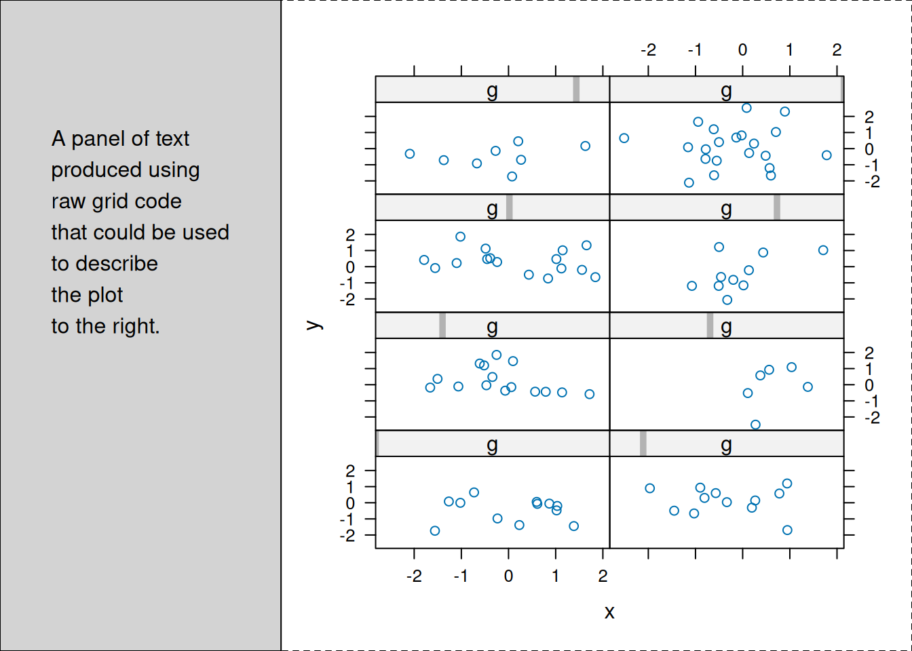

source("edit_log.R")
recommended_dir <- file.path(R.home(), "tests","recommended_tests")
unlink(recommended_dir,recursive = TRUE)
dir.create(recommended_dir)
success_recommended <- tools::testInstalledPackages(scope = "recommended",
outDir =recommended_dir,
errorsAreFatal=TRUE)Testing examples for package 'MASS' comparing 'MASS-Ex.Rout' to 'MASS-Ex.Rout.save' ... OK
Running specific tests for package 'MASS'
Running 'confint.R'
Running 'cov.mcd.R'
Running 'fitdistr.R'
comparing 'fitdistr.Rout' to 'fitdistr.Rout.save' ... OK
Running 'glm.nb.R'
Running 'glmmPQL.R'
Running 'hubers.R'
Running 'lme.R'
Running 'loglm.R'
Running 'polr.R'
Running 'profile.R'
Running 'regression.R'
comparing 'regression.Rout' to 'regression.Rout.save' ... OK
Running 'rlm.R'
Running 'scripts.R'
Testing examples for package 'lattice'
Running specific tests for package 'lattice'
Running 'auto-key.R'
Running 'barchart-width.R'
Running 'call.R'
Running 'colorkey-title.R'
Running 'dataframe-methods.R'
Running 'dates.R'
Running 'dotplotscoping.R'
Running 'fontsize.R'
Running 'levelplot.R'
Running 'MASSch04.R'
Running 'scales.R'
Running 'shade-wireframe.R'
Running 'summary.R'
Running 'temp.R'
Running 'test.R'
Running 'wireframe.R'
Running vignettes for package 'lattice'
Running 'grid.Rnw'
Testing examples for package 'Matrix'
Running specific tests for package 'Matrix'
Running 'abIndex-tsts.R'
Running 'base-matrix-fun.R'
Running 'bind.R'
comparing 'bind.Rout' to 'bind.Rout.save' ... OK
Running 'Class+Meth.R'
Running 'dg_Matrix.R'
Running 'dpo-test.R'
Running 'dtpMatrix.R'
Running 'factorizing.R'
Running 'group-methods.R'
Running 'indexing.R'
comparing 'indexing.Rout' to 'indexing.Rout.save' ... OK
Running 'matprod.R'
Running 'matr-exp.R'
Running 'other-pkgs.R'
Running 'packed-unpacked.R'
Running 'Simple.R'
Running 'spModel.matrix.R'
Running 'symmDN.R'
Running 'validObj.R'
Running 'write-read.R'
Running vignettes for package 'Matrix'
Running 'Comparisons.Rnw'
Running 'Design-issues.Rnw'
Running 'Intro2Matrix.Rnw'
Running 'Introduction.Rnw'
Running 'sparseModels.Rnw'
[[ suppressing 20 column names '1', '2', '3' ... ]]
[[ suppressing 24 column names '1', '2', '3' ... ]]
Testing examples for package 'nlme'
Running specific tests for package 'nlme'
Running 'anova.gls.R'
Running 'augPred_lab.R'
Running 'augPredmissing.R'
Running 'coef.R'
comparing 'coef.Rout' to 'coef.Rout.save' ... OK
Running 'contrMat.R'
Running 'corMatrix.R'
Running 'corStruct.R'
Running 'data.frame.R'
Running 'deparse.R'
Running 'deviance.R'
Running 'fitted.R'
Running 'getData.R'
Running 'getVarCov.R'
Running 'gls.R'
Running 'gnls-ch8.R'
Running 'lme.R'
comparing 'lme.Rout' to 'lme.Rout.save' ... OK
Running 'lmList.R'
Running 'missing.R'
comparing 'missing.Rout' to 'missing.Rout.save' ... OK
Running 'nlme.R'
Running 'nlme2.R'
Running 'predict.lme.R'
Running 'scoping.R'
Running 'sigma-fixed-etc.R'
Running 'updateLme.R'
Running 'varConstProp.R'
Running 'varFixed.R'
Running 'varIdent.R'
Testing examples for package 'survival'
comparing 'survival-Ex.Rout' to 'survival-Ex.Rout.save' ... OK
Running specific tests for package 'survival'
Running 'aareg.R'
comparing 'aareg.Rout' to 'aareg.Rout.save' ... OK
Running 'anova.R'
comparing 'anova.Rout' to 'anova.Rout.save' ... OK
Running 'bladder.R'
comparing 'bladder.Rout' to 'bladder.Rout.save' ... OK
Running 'book1.R'
comparing 'book1.Rout' to 'book1.Rout.save' ... OK
Running 'book2.R'
comparing 'book2.Rout' to 'book2.Rout.save' ... OK
Running 'book3.R'
comparing 'book3.Rout' to 'book3.Rout.save' ... OK
Running 'book4.R'
comparing 'book4.Rout' to 'book4.Rout.save' ... OK
Running 'book5.R'
comparing 'book5.Rout' to 'book5.Rout.save' ... OK
Running 'book6.R'
comparing 'book6.Rout' to 'book6.Rout.save' ... OK
Running 'book7.R'
comparing 'book7.Rout' to 'book7.Rout.save' ... OK
Running 'brier.R'
comparing 'brier.Rout' to 'brier.Rout.save' ... OK
Running 'cancer.R'
comparing 'cancer.Rout' to 'cancer.Rout.save' ... OK
Running 'checkSurv2.R'
comparing 'checkSurv2.Rout' to 'checkSurv2.Rout.save' ... OK
Running 'clogit.R'
comparing 'clogit.Rout' to 'clogit.Rout.save' ... OK
Running 'concordance.R'
comparing 'concordance.Rout' to 'concordance.Rout.save' ... OK
Running 'concordance2.R'
comparing 'concordance2.Rout' to 'concordance2.Rout.save' ... OK
Running 'concordance3.R'
comparing 'concordance3.Rout' to 'concordance3.Rout.save' ... OK
Running 'counting.R'
comparing 'counting.Rout' to 'counting.Rout.save' ... OK
Running 'coxsurv.R'
comparing 'coxsurv.Rout' to 'coxsurv.Rout.save' ... OK
Running 'coxsurv2.R'
comparing 'coxsurv2.Rout' to 'coxsurv2.Rout.save' ... OK
Running 'coxsurv3.R'
comparing 'coxsurv3.Rout' to 'coxsurv3.Rout.save' ... OK
Running 'coxsurv4.R'
comparing 'coxsurv4.Rout' to 'coxsurv4.Rout.save' ... OK
Running 'coxsurv5.R'
comparing 'coxsurv5.Rout' to 'coxsurv5.Rout.save' ... OK
Running 'coxsurv6.R'
comparing 'coxsurv6.Rout' to 'coxsurv6.Rout.save' ... OK
Running 'detail.R'
comparing 'detail.Rout' to 'detail.Rout.save' ... OK
Running 'difftest.R'
comparing 'difftest.Rout' to 'difftest.Rout.save' ... OK
Running 'doaml.R'
comparing 'doaml.Rout' to 'doaml.Rout.save' ... OK
Running 'doublecolon.R'
comparing 'doublecolon.Rout' to 'doublecolon.Rout.save' ... OK
Running 'doweight.R'
comparing 'doweight.Rout' to 'doweight.Rout.save' ... OK
Running 'dropspecial.R'
comparing 'dropspecial.Rout' to 'dropspecial.Rout.save' ... OK
Running 'ekm.R'
comparing 'ekm.Rout' to 'ekm.Rout.save' ... OK
Running 'expected.R'
comparing 'expected.Rout' to 'expected.Rout.save' ... OK
Running 'expected2.R'
comparing 'expected2.Rout' to 'expected2.Rout.save' ... OK
Running 'factor.R'
comparing 'factor.Rout' to 'factor.Rout.save' ... OK
Running 'factor2.R'
comparing 'factor2.Rout' to 'factor2.Rout.save' ... OK
Running 'finegray.R'
comparing 'finegray.Rout' to 'finegray.Rout.save' ... OK
Running 'fr_cancer.R'
comparing 'fr_cancer.Rout' to 'fr_cancer.Rout.save' ... OK
Running 'fr_kidney.R'
comparing 'fr_kidney.Rout' to 'fr_kidney.Rout.save' ... OK
Running 'fr_lung.R'
comparing 'fr_lung.Rout' to 'fr_lung.Rout.save' ... OK
Running 'fr_ovarian.R'
comparing 'fr_ovarian.Rout' to 'fr_ovarian.Rout.save' ... OK
Running 'fr_rat1.R'
comparing 'fr_rat1.Rout' to 'fr_rat1.Rout.save' ... OK
Running 'fr_resid.R'
comparing 'fr_resid.Rout' to 'fr_resid.Rout.save' ... OK
Running 'fr_simple.R'
comparing 'fr_simple.Rout' to 'fr_simple.Rout.save' ... OK
Running 'frailty.R'
comparing 'frailty.Rout' to 'frailty.Rout.save' ... OK
Running 'frank.R'
comparing 'frank.Rout' to 'frank.Rout.save' ... OK
Running 'infcox.R'
comparing 'infcox.Rout' to 'infcox.Rout.save' ... OK
Running 'jasa.R'
comparing 'jasa.Rout' to 'jasa.Rout.save' ... OK
Running 'model.matrix.R'
comparing 'model.matrix.Rout' to 'model.matrix.Rout.save' ... OK
Running 'mstate.R'
comparing 'mstate.Rout' to 'mstate.Rout.save' ... OK
Running 'mstate2.R'
comparing 'mstate2.Rout' to 'mstate2.Rout.save' ... OK
Running 'mstrata.R'
comparing 'mstrata.Rout' to 'mstrata.Rout.save' ... OK
Running 'multi2.R'
comparing 'multi2.Rout' to 'multi2.Rout.save' ... Running 'multi3.R'
comparing 'multi3.Rout' to 'multi3.Rout.save' ... OK
Running 'multistate.R'
comparing 'multistate.Rout' to 'multistate.Rout.save' ... OK
Running 'neardate.R'
comparing 'neardate.Rout' to 'neardate.Rout.save' ... OK
Running 'nested.R'
comparing 'nested.Rout' to 'nested.Rout.save' ... OK
Running 'nsk.R'
comparing 'nsk.Rout' to 'nsk.Rout.save' ... OK
Running 'ovarian.R'
comparing 'ovarian.Rout' to 'ovarian.Rout.save' ... OK
Running 'overlap.R'
comparing 'overlap.Rout' to 'overlap.Rout.save' ... OK
Running 'prednew.R'
comparing 'prednew.Rout' to 'prednew.Rout.save' ... OK
Running 'predsurv.R'
comparing 'predsurv.Rout' to 'predsurv.Rout.save' ... OK
Running 'pseudo.R'
comparing 'pseudo.Rout' to 'pseudo.Rout.save' ... OK
Running 'pspline.R'
comparing 'pspline.Rout' to 'pspline.Rout.save' ... OK
Running 'pyear.R'
comparing 'pyear.Rout' to 'pyear.Rout.save' ... OK
Running 'quantile.R'
comparing 'quantile.Rout' to 'quantile.Rout.save' ... OK
Running 'r_lung.R'
comparing 'r_lung.Rout' to 'r_lung.Rout.save' ... OK
Running 'r_resid.R'
comparing 'r_resid.Rout' to 'r_resid.Rout.save' ... OK
Running 'r_sas.R'
comparing 'r_sas.Rout' to 'r_sas.Rout.save' ... OK
Running 'r_scale.R'
comparing 'r_scale.Rout' to 'r_scale.Rout.save' ... OK
Running 'r_stanford.R'
comparing 'r_stanford.Rout' to 'r_stanford.Rout.save' ... OK
Running 'r_strata.R'
comparing 'r_strata.Rout' to 'r_strata.Rout.save' ... OK
Running 'r_tdist.R'
comparing 'r_tdist.Rout' to 'r_tdist.Rout.save' ... OK
Running 'r_user.R'
comparing 'r_user.Rout' to 'r_user.Rout.save' ... OK
Running 'ratetable.R'
comparing 'ratetable.Rout' to 'ratetable.Rout.save' ... OK
Running 'residsf.R'
comparing 'residsf.Rout' to 'residsf.Rout.save' ... OK
Running 'royston.R'
comparing 'royston.Rout' to 'royston.Rout.save' ... OK
Running 'rttright.R'
comparing 'rttright.Rout' to 'rttright.Rout.save' ... OK
Running 'singtest.R'
comparing 'singtest.Rout' to 'singtest.Rout.save' ... OK
Running 'strata2.R'
comparing 'strata2.Rout' to 'strata2.Rout.save' ... OK
Running 'stratatest.R'
comparing 'stratatest.Rout' to 'stratatest.Rout.save' ... OK
Running 'summary_survfit.R'
comparing 'summary_survfit.Rout' to 'summary_survfit.Rout.save' ... OK
Running 'surv.R'
comparing 'surv.Rout' to 'surv.Rout.save' ... OK
Running 'survcheck.R'
comparing 'survcheck.Rout' to 'survcheck.Rout.save' ... OK
Running 'survfit1.R'
comparing 'survfit1.Rout' to 'survfit1.Rout.save' ... OK
Running 'survfit2.R'
comparing 'survfit2.Rout' to 'survfit2.Rout.save' ... OK
Running 'survreg1.R'
comparing 'survreg1.Rout' to 'survreg1.Rout.save' ... OK
Running 'survreg2.R'
comparing 'survreg2.Rout' to 'survreg2.Rout.save' ... OK
Running 'survSplit.R'
comparing 'survSplit.Rout' to 'survSplit.Rout.save' ... OK
Running 'survtest.R'
comparing 'survtest.Rout' to 'survtest.Rout.save' ... OK
Running 'testci.R'
comparing 'testci.Rout' to 'testci.Rout.save' ... OK
Running 'testci2.R'
comparing 'testci2.Rout' to 'testci2.Rout.save' ... OK
Running 'testnull.R'
comparing 'testnull.Rout' to 'testnull.Rout.save' ... OK
Running 'testreg.R'
comparing 'testreg.Rout' to 'testreg.Rout.save' ... OK
Running 'tiedtime.R'
comparing 'tiedtime.Rout' to 'tiedtime.Rout.save' ... OK
Running 'tmerge.R'
comparing 'tmerge.Rout' to 'tmerge.Rout.save' ... OK
Running 'tmerge2.R'
comparing 'tmerge2.Rout' to 'tmerge2.Rout.save' ... OK
Running 'tmerge3.R'
comparing 'tmerge3.Rout' to 'tmerge3.Rout.save' ... OK
Running 'tt.R'
comparing 'tt.Rout' to 'tt.Rout.save' ... OK
Running 'tt2.R'
comparing 'tt2.Rout' to 'tt2.Rout.save' ... OK
Running 'turnbull.R'
comparing 'turnbull.Rout' to 'turnbull.Rout.save' ... OK
Running 'update.R'
comparing 'update.Rout' to 'update.Rout.save' ... OK
Running 'yates0.R'
comparing 'yates0.Rout' to 'yates0.Rout.save' ... Running 'yates1.R'
comparing 'yates1.Rout' to 'yates1.Rout.save' ... OK
Running 'yates2.R'
Running 'zph.R'
comparing 'zph.Rout' to 'zph.Rout.save' ... OK
Running vignettes for package 'survival'
Running 'adjcurve.Rnw'
Running 'approximate.Rnw'
Running 'compete.Rnw'
Running 'concordance.Rnw'
Running 'matrix.Rnw'
Running 'methods.Rnw'
Running 'multi.Rnw'
Running 'other.Rnw'
Running 'population.Rnw'
Running 'redistribute.Rnw'
Running 'splines.Rnw'
Running 'survival.Rnw'Warning in coxph(Surv(tstart, time, status) ~ trt +
celltype + karno + time:karno, : a variable appears on both
the left and right sides of the formulaWarning in coxph(Surv(tstart, time, status) ~ trt +
celltype + karno + rank(time):karno, : a variable appears
on both the left and right sides of the formula Running 'tiedtimes.Rnw'
Running 'timedep.Rnw'Warning in tmerge(jasa, tdata, id = subject, death =
event(futime, fustat), : replacement of variable
'transplant' Running 'validate.Rnw'Warning in coxph.fit(X, Y, istrat, offset, init, control,
weights = weights, : Ran out of iterations and did not
convergeWarning in coxph.fit(X, Y, istrat, offset, init, control,
weights = weights, : Ran out of iterations and did not
convergeWarning in coxph(Surv(tstart, time, status) ~ trt +
celltype + karno + time:karno, : a variable appears on both
the left and right sides of the formulaWarning in coxph(Surv(tstart, time, status) ~ trt +
celltype + karno + rank(time):karno, : a variable appears
on both the left and right sides of the formulaWarning in tmerge(jasa, tdata, id = subject, death =
event(futime, fustat), : replacement of variable
'transplant'Warning in coxph.fit(X, Y, istrat, offset, init, control,
weights = weights, : Ran out of iterations and did not
converge
Warning in coxph.fit(X, Y, istrat, offset, init, control,
weights = weights, : Ran out of iterations and did not
convergeTesting examples for package 'boot'
comparing 'boot-Ex.Rout' to 'boot-Ex.Rout.save' ... OK
Running specific tests for package 'boot'
Running 'parallel-censboot.R'
Testing examples for package 'cluster'
Running specific tests for package 'cluster'
Running 'agnes-ex.R'
comparing 'agnes-ex.Rout' to 'agnes-ex.Rout.save' ... OK
Running 'clara-ex.R'
comparing 'clara-ex.Rout' to 'clara-ex.Rout.save' ... OK
Running 'clara-gower.R'
Running 'clara-NAs.R'
comparing 'clara-NAs.Rout' to 'clara-NAs.Rout.save' ... OK
Running 'clara.R'
comparing 'clara.Rout' to 'clara.Rout.save' ... OK
Running 'clusplot-out.R'
comparing 'clusplot-out.Rout' to 'clusplot-out.Rout.save' ... OK
Running 'daisy-ex.R'
comparing 'daisy-ex.Rout' to 'daisy-ex.Rout.save' ... OK
Running 'diana-boots.R'
Running 'diana-ex.R'
comparing 'diana-ex.Rout' to 'diana-ex.Rout.save' ... OK
Running 'ellipsoid-ex.R'
comparing 'ellipsoid-ex.Rout' to 'ellipsoid-ex.Rout.save' ... OK
Running 'fanny-ex.R'
comparing 'fanny-ex.Rout' to 'fanny-ex.Rout.save' ... OK
Running 'mona.R'
comparing 'mona.Rout' to 'mona.Rout.save' ... OK
Running 'pam.R'
comparing 'pam.Rout' to 'pam.Rout.save' ... OK
Running 'silhouette-default.R'
comparing 'silhouette-default.Rout' to 'silhouette-default.Rout.save' ... OK
Running 'sweep-ex.R'
Testing examples for package 'codetools'
Running specific tests for package 'codetools'
Running 'tests.R'
Testing examples for package 'foreign'
Running specific tests for package 'foreign'
Running 'arff.R'
comparing 'arff.Rout' to 'arff.Rout.save' ... OK
Running 'download.R'
Running 'minitab.R'
comparing 'minitab.Rout' to 'minitab.Rout.save' ... OK
Running 'mval_bug.R'
comparing 'mval_bug.Rout' to 'mval_bug.Rout.save' ... OK
Running 'octave.R'
comparing 'octave.Rout' to 'octave.Rout.save' ... OK
Running 'S3.R'
comparing 'S3.Rout' to 'S3.Rout.save' ... OK
Running 'sas.R'
Running 'spss.R'
comparing 'spss.Rout' to 'spss.Rout.save' ... Running 'stata.R'
comparing 'stata.Rout' to 'stata.Rout.save' ... OK
Running 'testEmpty.R'
comparing 'testEmpty.Rout' to 'testEmpty.Rout.save' ... OK
Running 'writeForeignSPSS.R'
comparing 'writeForeignSPSS.Rout' to 'writeForeignSPSS.Rout.save' ... OK
Running 'xport.R'
comparing 'xport.Rout' to 'xport.Rout.save' ... OK
Testing examples for package 'KernSmooth'
Running specific tests for package 'KernSmooth'
Running 'bkfe.R'
Running 'locpoly.R'
Testing examples for package 'rpart'
comparing 'rpart-Ex.Rout' to 'rpart-Ex.Rout.save' ... OK
Running specific tests for package 'rpart'
Running 'backticks.R'
comparing 'backticks.Rout' to 'backticks.Rout.save' ... OK
Running 'cost.R'
comparing 'cost.Rout' to 'cost.Rout.save' ... OK
Running 'cptest.R'
comparing 'cptest.Rout' to 'cptest.Rout.save' ... OK
Running 'minus_in_formula.R'
comparing 'minus_in_formula.Rout' to 'minus_in_formula.Rout.save' ... OK
Running 'priors.R'
comparing 'priors.Rout' to 'priors.Rout.save' ... OK
Running 'rescale.R'
comparing 'rescale.Rout' to 'rescale.Rout.save' ... OK
Running 'testall.R'
comparing 'testall.Rout' to 'testall.Rout.save' ... OK
Running 'treble.R'
comparing 'treble.Rout' to 'treble.Rout.save' ... OK
Running 'treble2.R'
comparing 'treble2.Rout' to 'treble2.Rout.save' ... OK
Running 'treble3.R'
comparing 'treble3.Rout' to 'treble3.Rout.save' ... OK
Running 'treble4.R'
comparing 'treble4.Rout' to 'treble4.Rout.save' ... OK
Running 'usersplits.R'
comparing 'usersplits.Rout' to 'usersplits.Rout.save' ... OK
Running 'xpred1.R'
comparing 'xpred1.Rout' to 'xpred1.Rout.save' ... OK
Running 'xpred2.R'
comparing 'xpred2.Rout' to 'xpred2.Rout.save' ... OK
Running vignettes for package 'rpart'
Running 'longintro.Rnw'
Running 'usercode.Rnw'
Testing examples for package 'class'
Testing examples for package 'nnet'
Testing examples for package 'spatial'
comparing 'spatial-Ex.Rout' to 'spatial-Ex.Rout.save' ... OK
Running specific tests for package 'spatial'
Testing examples for package 'mgcv'edit_log("recommended packages",success_recommended )
system("rm -rf recommended_tests")
cmd <- paste("cp -r ", recommended_dir, " recommended_tests")
system(cmd)
source("mv_rout.R")
mv_rout("recommended_tests")